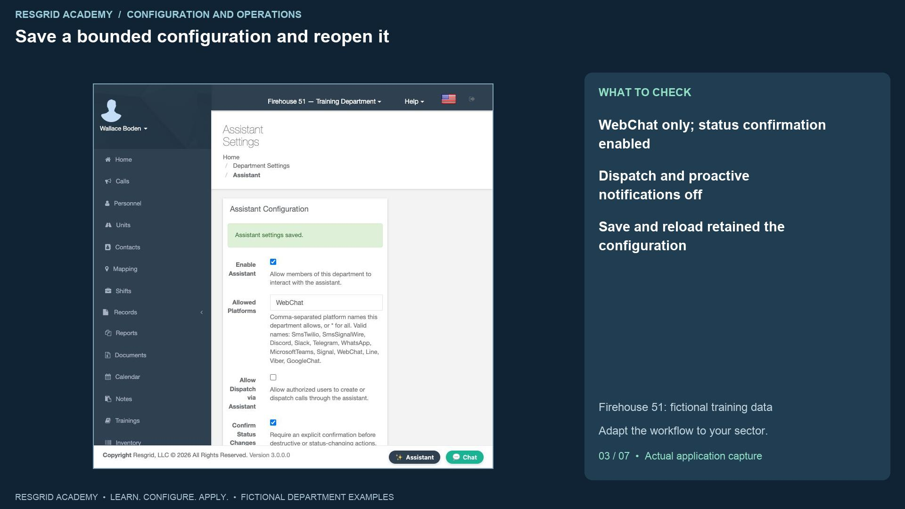
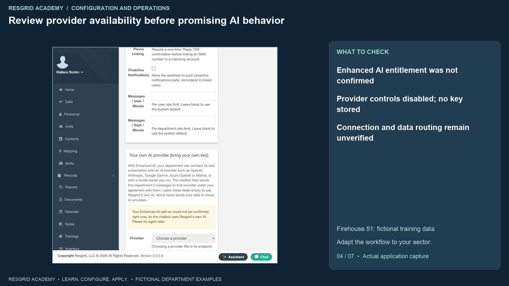
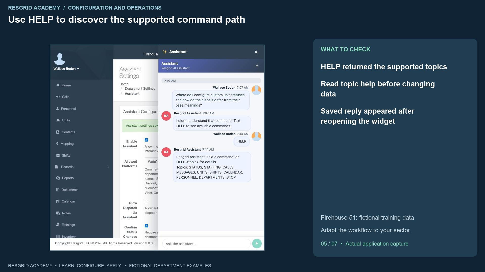
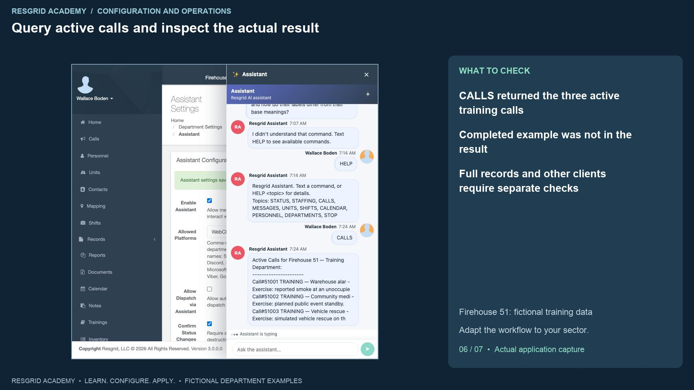
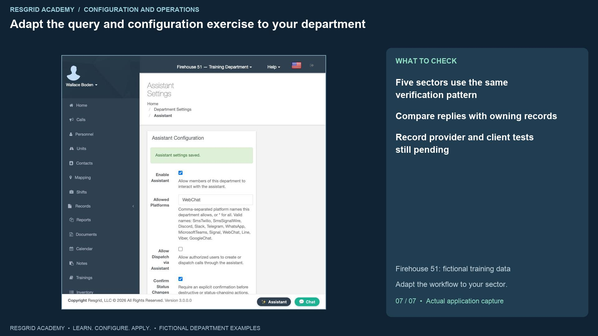

Configuration walkthrough
Use the Assistant and understand AI prerequisites
Follow each step, understand its impact, and try the practice exercise with your department.
Step 1
Distinguish the Assistant from a team conversation

Read the transcript
The Assistant opens a conversation with the system, while Chat opens conversations with department members. Use the Assistant button where it is available. In this synthetic department, Wallace Boden asks where to configure custom unit statuses and how their labels differ from their base meanings. Reopening the saved conversation shows the original question and a reply saying the command was not understood, with a suggestion to send HELP. That is the behavior we observed. It is not an answer to the configuration question and does not demonstrate natural-language A I guidance. A system can expose an Assistant entry point without every provider, feature or model being available. Start with the supported help path, and inspect the owning configuration screen before acting on guidance.
Step 2
Open the department’s Assistant controls

Read the transcript
Open Assistant Settings from Department Settings. The page separates ordinary department controls from the bring-your-own-provider section. Enable Assistant controls whether department members may interact with it. Allowed Platforms accepts a comma-separated list, with an asterisk allowing all listed platforms. The page lists WebChat alongside external messaging platforms. Selecting a name does not configure that platform’s credentials, connect a bot or prove message delivery. In this lesson we use WebChat only in the isolated training stack. A search organization might begin with a browser-based coordination exercise, while a security company might review its site communications channels separately. Choose the scope that your organization can configure and verify, rather than assuming every channel is available from this one field.
Step 3
Save a bounded configuration and reopen it

Read the transcript
We enable Assistant, set Allowed Platforms to WebChat and enable Confirm Status Changes. We leave Allow Dispatch via Assistant off, Confirm Phone Linking on and Proactive Notifications off. Save produces the saved-settings banner. Reloading the page retains the values. That verifies persistence of these department settings. Confirm Status Changes is intended to require explicit confirmation before destructive or status-changing actions; this recording does not run such an action. Confirm Phone Linking relates to an S M S account-linking confirmation, which we do not exercise. The per-user and per-department message-rate fields remain blank, so the screen says the system default applies. We do not measure those limits. Review access, confirmations and rate policy before broader rollout, and test the actual behavior with approved synthetic actions.
Step 4
Review provider availability before promising AI behavior

Read the transcript
The bring-your-own-provider section says Enhanced A I is required to connect a department’s provider subscription or compatible model endpoint. In this stack, the add-on could not be confirmed and the provider controls are disabled. No provider key is stored. The visible endpoint guidance calls for H T T P S and a public address, and the model field asks for the provider’s exact model name. Those are configuration requirements, not evidence of a working connection. Connecting a provider can change where department messages are processed, so the account owner must review the intended data flow and provider agreement. This lesson does not verify provider connectivity, data routing, paid entitlement or an A I-generated answer. Record those prerequisites explicitly instead of treating the department enable switch as proof that they are met.
Step 5
Use HELP to discover the supported command path

Read the transcript
Send HELP in the Assistant conversation. The saved reply says to text a command or HELP followed by a topic for details. Its listed topics are status, staffing, calls, messages, units, shifts, calendar, personnel, departments and stop. This gives a supported command vocabulary for this deployment. Read topic help before any command that can change a state, send a communication or create an assignment. In this recording the live message remained marked Sending, so we closed and reopened the widget to inspect saved history. The question and reply then appeared with timestamps. That verifies the saved help response in this view. It does not verify another device, another platform or a future command’s result. Keep the supported vocabulary and any client limitation visible in the walkthrough.
Step 6
Query active calls and inspect the actual result

Read the transcript
Send CALLS, the read-only topic listed in help. After reopening the conversation, the Assistant returns Active Calls for Firehouse fifty-one, Training Department, with the three seeded training calls. Each entry includes a call number and shortened title and description. The completed dispatch-settings exercise is not listed. This is an observed operational query against the synthetic department; it does not create or dispatch a call. Inspect the underlying call record when you need full text, current assignment or supporting evidence. The widget also retained an Assistant is typing indicator after the reply was visible, so do not interpret that indicator as a reliable completion signal in this recording. The saved content is the evidence. Natural-language reasoning and an external messaging channel remain separate tests.
Step 7
Adapt the query and configuration exercise to your department

Read the transcript
For community paramedicine and mental health teams, a supported query can help locate operational response information; the Assistant is not clinical decision support. Search and rescue leaders can inspect active search calls and then open the source record for full assignment details. Security supervisors can inspect active site activity and verify access and scope before wider use. Wildland contractors can review active assignment information while checking connectivity and current source records. Industrial teams can find response activity and verify facility procedures and equipment evidence on the owning screens. Your exercise is to choose one verified platform, save and reopen a bounded configuration, run HELP, run an authorized read-only query and compare the reply with the source records. Document provider prerequisites, client behavior and every action still awaiting a separate test.
Apply it to your department
- Community paramedicine and mental health response
- Ask for help locating setup or operational information, then check it on the owning screen; the assistant is not clinical decision support.
- Search and rescue
- Ask how to locate search-team or configuration information; verify the answer and current source records.
- Security companies and departments
- Ask for help with patrol workflow configuration; inspect site scope and source data before acting.
- Wildland contractors
- Ask how to find deployment or crew setup information; verify current assignment data and provider availability.
- Industrial emergency response teams
- Ask for help finding facility workflows; validate answers against current records and approved procedures.
Put it into practice
Check your department’s enabled modules, permissions and provider configuration. Save each change on its own screen, review the retained value, and confirm the result with the people and devices that will use it.